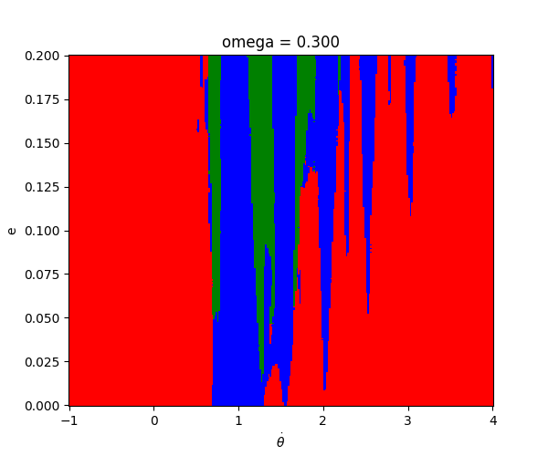
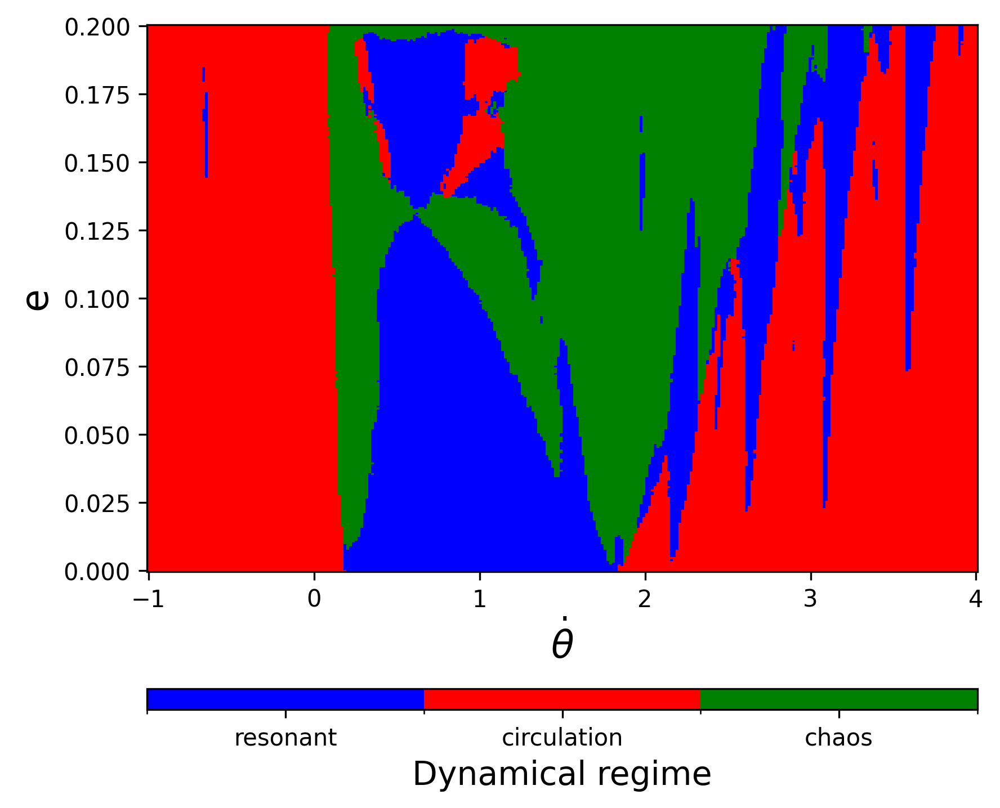
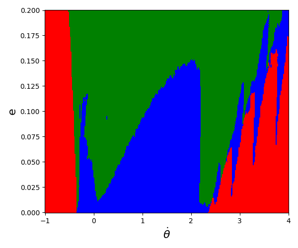
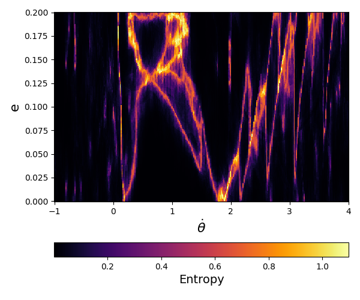
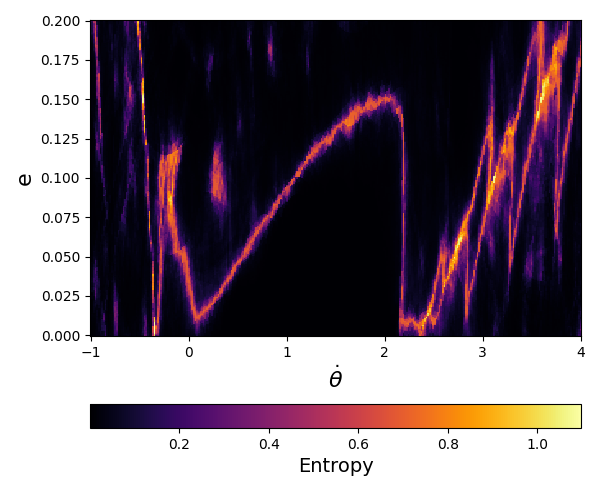
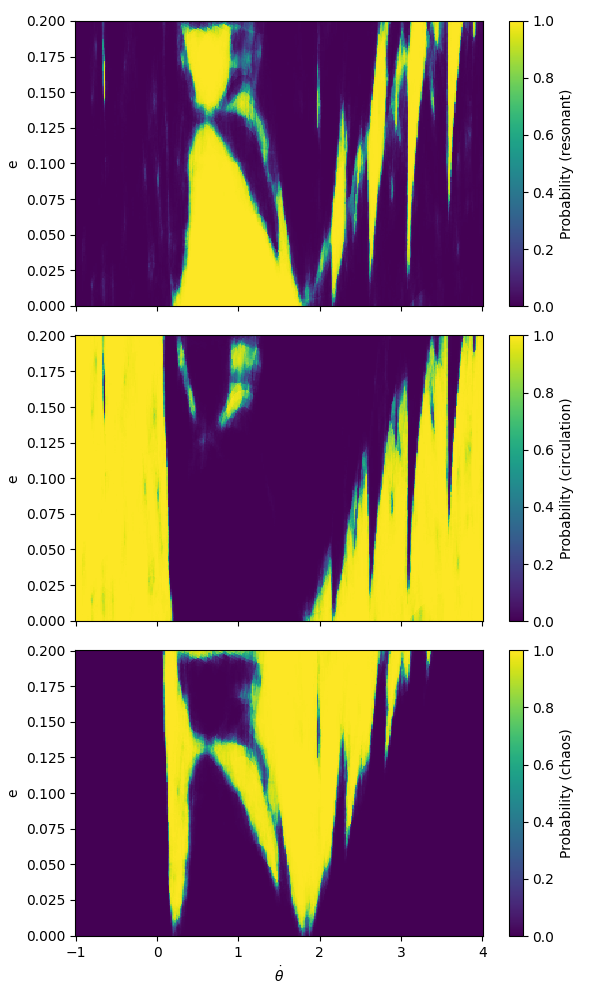
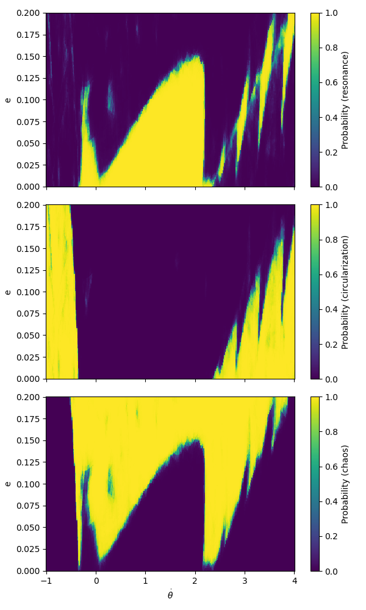

Welcome to the official repository for PoincAIré. This project explores the synergy between classical dynamics and modern machine learning.

Fig 1: Animated evolution of the dynamical structure across varying frequencies (ω).
[Add more project details, scientific objectives and context here.]
[Insert authors names, affiliations, and contact information here.]
[Insert bibliographic references and links to your published articles here.]
To run the examples and utilize the classification pipeline, please download the pre-trained machine learning models and tracking assets from the official repository release package.
[Link to model download placeholder]
Select an example from the side menu to view its workflow execution, generated pipeline code, and dynamic mapping outputs.
This script computes the grid space and predicts discrete classifications to map out the general layout of the system.
import numpy as np # Array operations
import matplotlib.pyplot as plt # Plotting tool
import joblib # Model loading tool
from matplotlib.colors import ListedColormap, BoundaryNorm # Colormap tools
# Load pre-trained XGBoost model
model = joblib.load("xgboost_model.pkl")# Domain Settings
omega_list = [1.34] # Target frequency
theta_sel = 0. # Fixed angle section
ecc_vals = np.linspace(0., 0.2, 300) # Eccentricity range
thetadot_vals = np.linspace(-1., 4., 300) # Angular velocity range
E, T = np.meshgrid(ecc_vals, thetadot_vals) # 2D grid generation
# Visualization Settings
cmap_regimes = ListedColormap(["blue", "red", "green"]) # Colormap colors
norm = BoundaryNorm([-0.5, 0.5, 1.5, 2.5], cmap_regimes.N) # Bounds for discrete classes
class_names = ["resonance", "circularization", "chaos"] # Class labels
fig_size = (6, 5) # Plot dimensions
cbar_kwargs = {"orientation": "horizontal", "pad": 0.15, "aspect": 40} # Colorbar layout
save_kwargs = {"dpi": 300, "bbox_inches": "tight"} # File export qualityfor omega_sel in omega_list:
# Build 2D test feature grid [ecc, thetadot, omega, theta]
grid = np.c_[E.ravel(), T.ravel(), np.full(E.size, omega_sel), np.full(E.size, theta_sel)]
# Predict probability distribution and pick the highest index
probs = model.predict_proba(grid)
pred_class = np.argmax(probs, axis=1).reshape(E.shape)
# Plotting layout
plt.figure(figsize=fig_size)
img = plt.pcolormesh(T, E, pred_class, cmap=cmap_regimes, norm=norm, shading="auto")
plt.xlabel(r"$\dot{\theta}$", fontsize=16)
plt.ylabel("e", fontsize=16)
# Colorbar format
cbar = plt.colorbar(img, **cbar_kwargs)
cbar.set_ticks([0, 1, 2])
cbar.set_ticklabels(class_names)
cbar.set_label("Dynamical regime", fontsize=14)
plt.tight_layout()
plt.savefig(f"diagram_{omega_sel}.png", **save_kwargs)
plt.close()

This snippet quantifies the classification uncertainty across the parameter boundaries using normalized Shannon entropy.
for omega_sel in omega_list:
# Setup standard tracking grid matrix
grid = np.c_[E.ravel(), T.ravel(), np.full(E.size, omega_sel), np.full(E.size, theta_sel)]
probs = model.predict_proba(grid)
# Calculate normalized Shannon Entropy for a 3-class system
eps = 1e-12 # Tiny safety threshold to avoid log(0) error
entropy = -np.sum(probs * np.log(probs + eps), axis=1) # Core entropy sum
max_entropy = np.log(3) # Maximum uncertainty cap
entropy_normalized = entropy / max_entropy # Scale bounds strictly to [0, 1]
entropy_map = entropy_normalized.reshape(E.shape) # Reshape vector to 2D grid # Render Uncertainty Map
plt.figure(figsize=fig_size)
img = plt.pcolormesh(T, E, entropy_map, shading="auto", cmap="inferno", vmin=0, vmax=1)
# Colorbar properties
cbar = plt.colorbar(img, **cbar_kwargs)
cbar.set_label("Entropy", fontsize=14)
plt.xlabel(r"$\dot{\theta}$", fontsize=16)
plt.ylabel("e", fontsize=16)
plt.tight_layout()
plt.savefig(f"uncertainty_{omega_sel}.png", **save_kwargs)
plt.close()

This script slices the output array to map out the individual, standalone probabilities for each specific regime.
for omega_sel in omega_list:
# Setup coordinates matrix arrays
grid = np.c_[E.ravel(), T.ravel(), np.full(E.size, omega_sel), np.full(E.size, theta_sel)]
probs = model.predict_proba(grid)
# Slice single probabilities for each target state
P_res = probs[:, 0].reshape(E.shape) # Slice Resonance data
P_circ = probs[:, 1].reshape(E.shape) # Slice Circularization data
P_chaos = probs[:, 2].reshape(E.shape) # Slice Chaos data # Setup a vertically stacked multi-panel layout (3 rows, 1 col)
fig, axes = plt.subplots(3, 1, figsize=(6, 10), sharex=True)
maps = [P_res, P_circ, P_chaos] # Data array collection
class_names = ["resonance", "circularization", "chaos"]
for i, ax in enumerate(axes):
# Render continuous colormap layer using 'viridis'
im = ax.pcolormesh(T, E, maps[i], shading="auto", cmap="viridis", vmin=0, vmax=1)
ax.set_ylabel("e")
# Keep horizontal labels only on the bottom panel
if i == len(axes) - 1:
ax.set_xlabel(r"$\dot{\theta}$")
# Hook local indicator bar to individual panel
cbar = plt.colorbar(im, ax=ax)
cbar.set_label(f"Probability ({class_names[i]})")
plt.tight_layout()
plt.savefig(f"probability_{omega_sel}.png")
plt.close()
